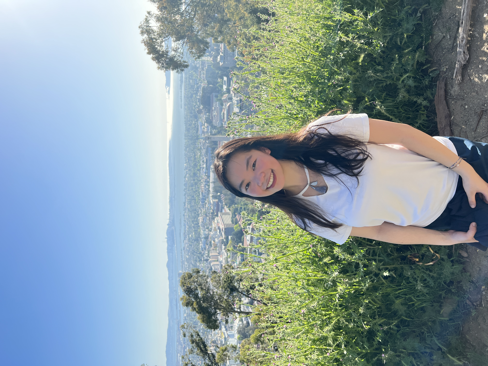

About Me
Hey,
thanks for visiting my website. My name is Sheryl. Living in Madison, Wisconsin, I major in Data Science and Economics at UW-Madison. The year of 2025 marks my graduation and a lovely farewell to my 16-year long journey of being a student, but the exciting journey of exploring new knowledge, embracing new challenges, and meeting new people won’t stop here. Let me to share with you some things about me.
